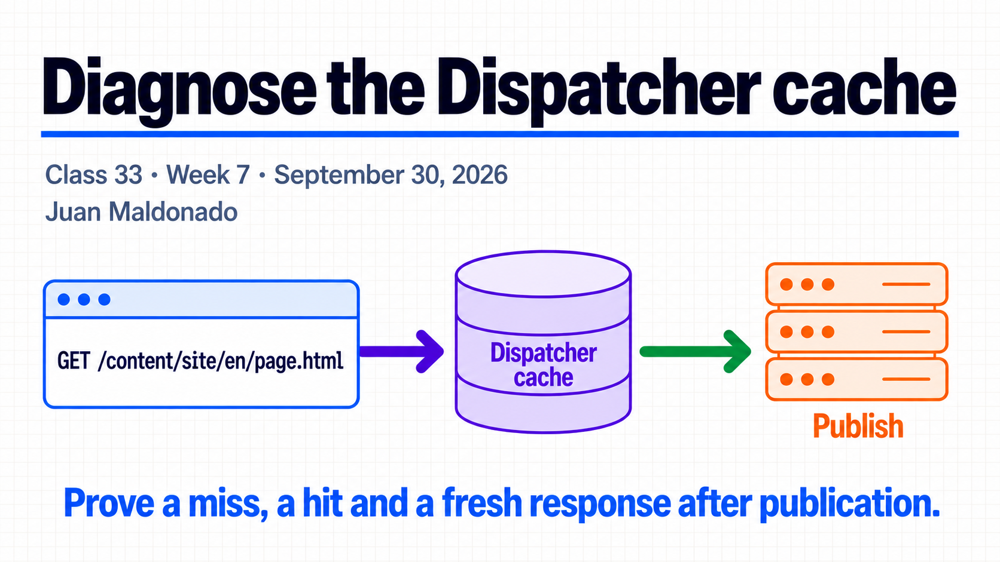
Topic summary
Dispatcher stores responses selected by /cache/rules. After a content update, /invalidate and .stat timestamps can make stored HTML stale; TTL may also expire it. /ignoreUrlParams determines whether a query parameter is ignored for Dispatcher caching. Prove each decision with the Dispatcher log and Publish requests.
30-minute agenda
| Time | Slides | Focus |
|---|---|---|
| 0–4 | 1–2 | One URL, two versions. |
| 4–11 | 3–5 | Eligibility, miss and hit, storage versus invalidation. |
| 11–18 | 6–9 | Stat files, flush, TTL and query parameters. |
| 18–27 | 10–11 | Local A, A, B, B lab and diagnosis. |
| 27–30 | 12 | Questions. |
For 60 minutes, add a guided local run and discuss a stale response. The Spanish guide contains the commands, evidence fields and answers.
Complete slide deck
Copy each complete numbered image to PowerPoint or download its PNG.
{kind=link}
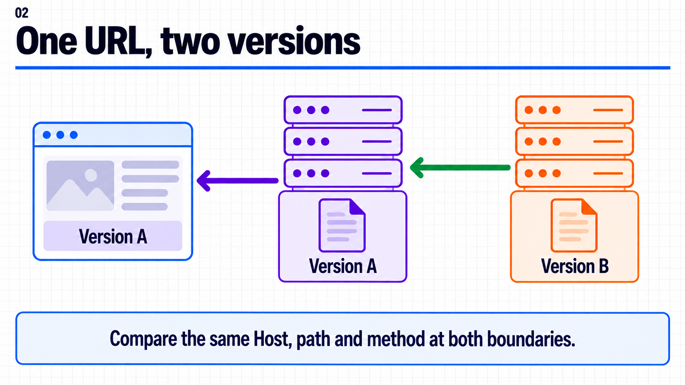
{kind=link}
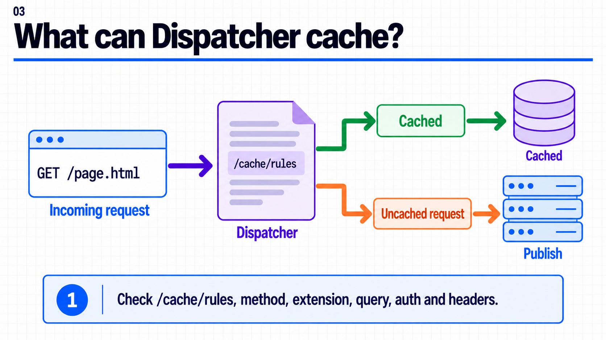
{kind=link}
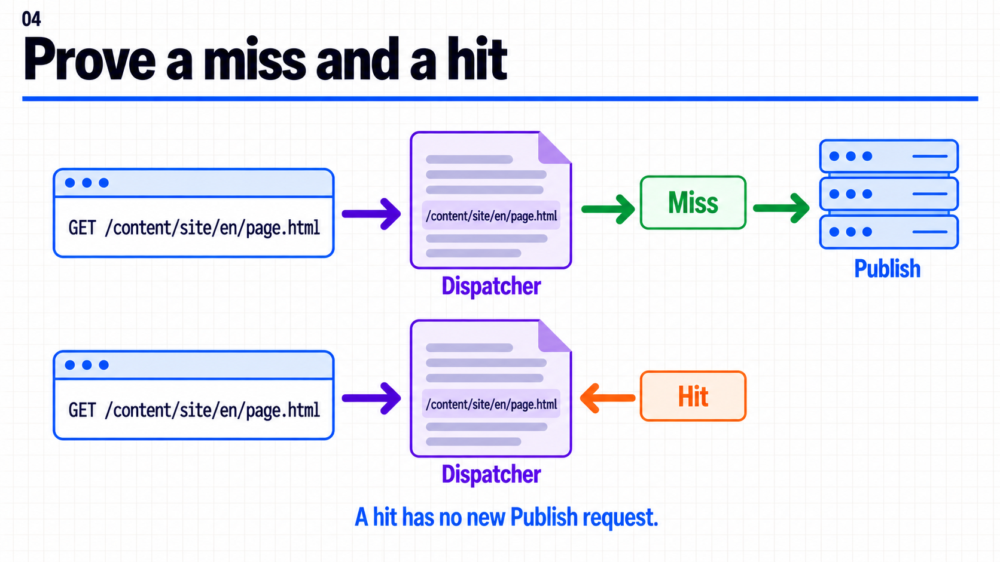
{kind=link}
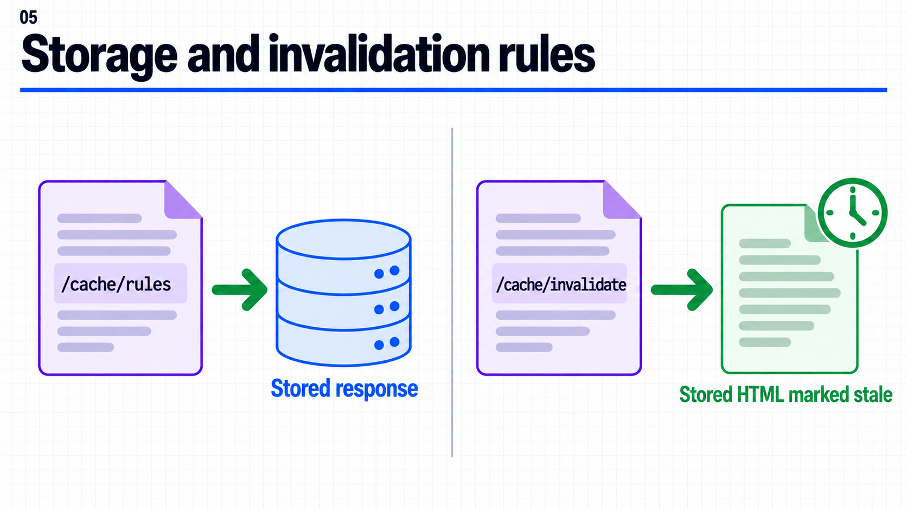
{kind=link}
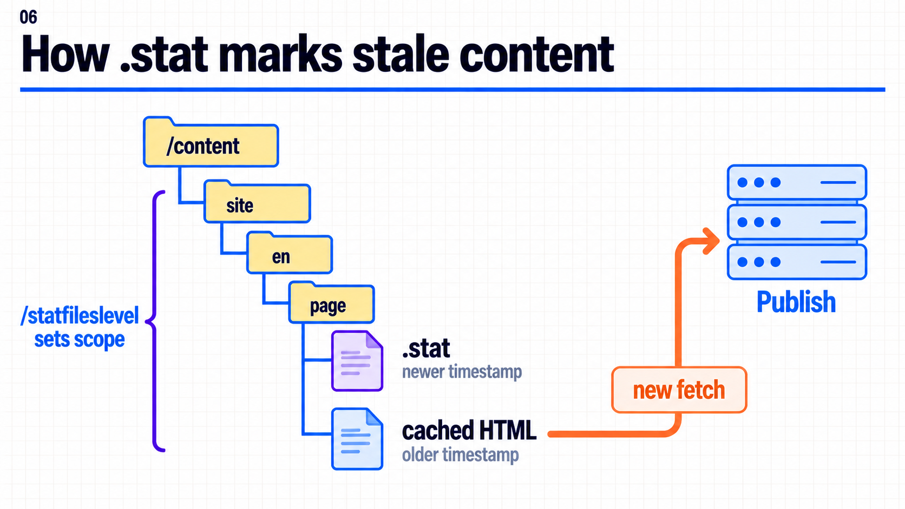
{kind=link}
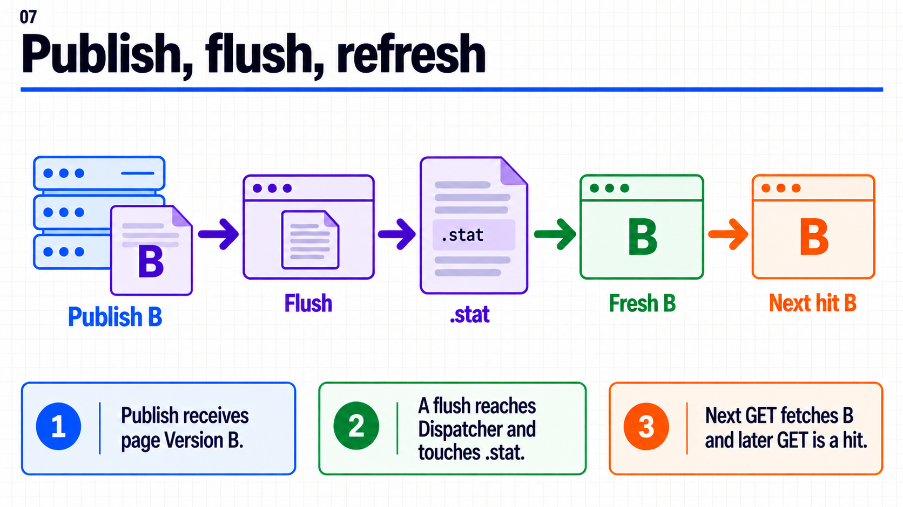
{kind=link}
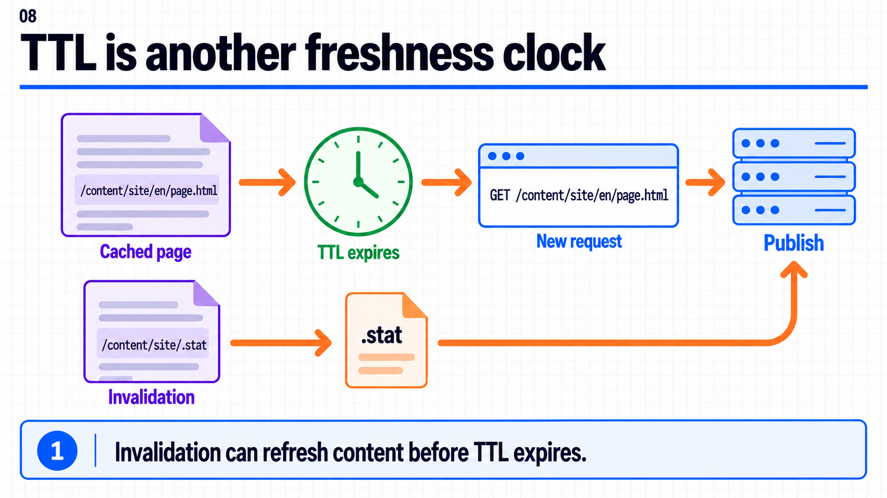
{kind=link}
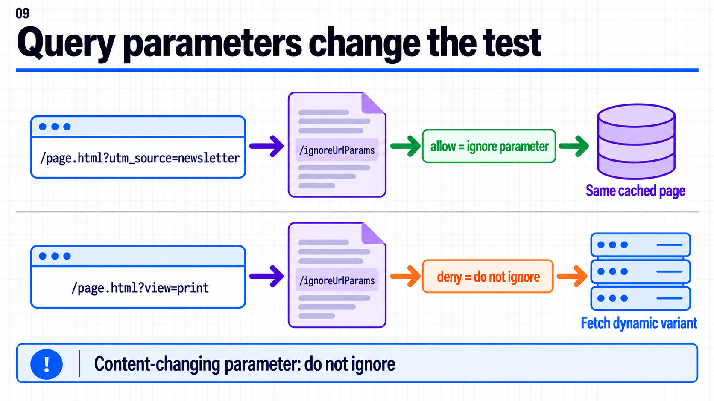
{kind=link}
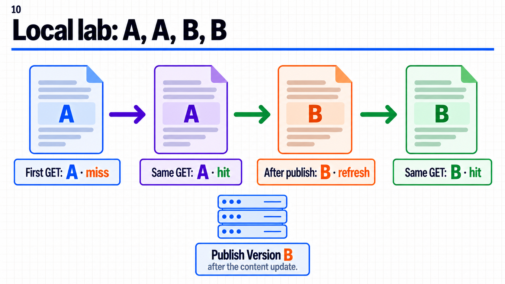
{kind=link}
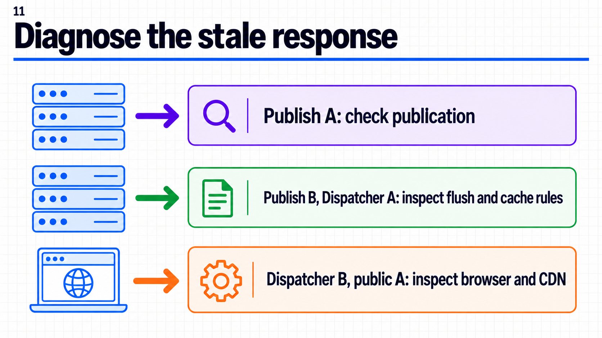
{kind=link}
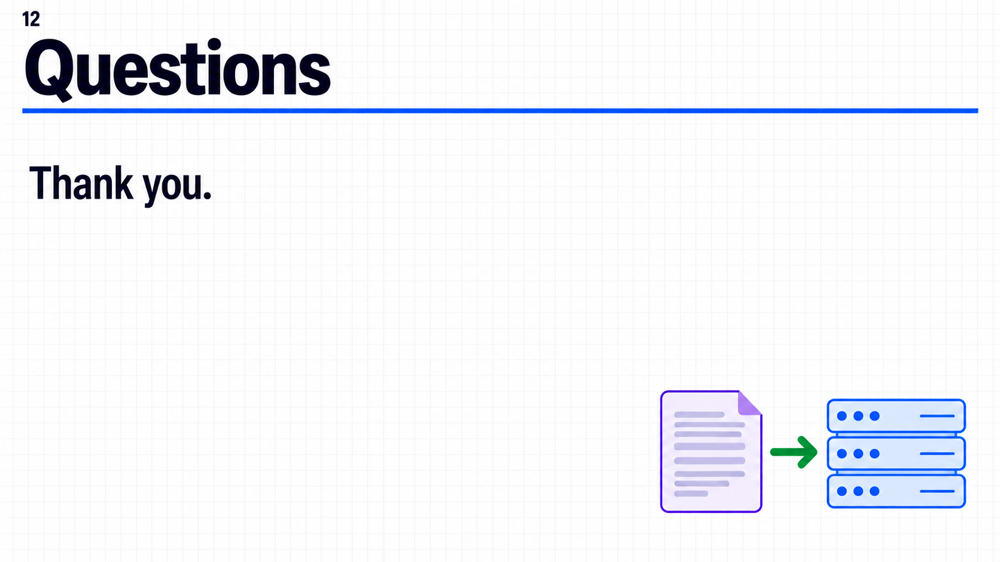
{kind=link}
Demo local
Ejecuta Dispatcher Tools contra Publish local. Compara dos GET idénticas, publica el cambio A a B y repite la misma URL dos veces. La guía paso a paso indica qué buscar en logs, el archivo de caché y .stat. Son resultados esperados; no hay una ejecución local registrada en este repositorio.